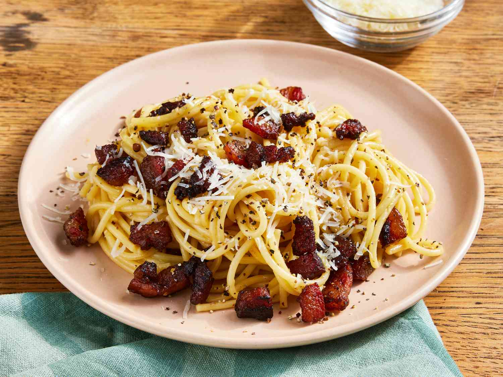

Spaghetti alla Carbonara

This classic spaghetti alla carbonara recipe is smooth, creamy, and full
of rich Italian flavor.
Carbonara is made with guanciale (cured pork), eggs, Pecorino Romano
cheese, spaghetti pasta, and lots of black pepper. Italians don't add
extra ingredients like cream, milk, garlic, or onions. Try this recipe
if you want to make an authentic, creamy carbonara that comes straight
from Italy.
Ingredients:
These are the ingredients you'll need to make this Spaghetti alla
Carbonara recipe:
- 2 teaspoons olive oil;
- 1 pound guanciale (cured pork cheek), diced;
- 1 (16 ounce) package spaghetti;
- 3 large eggs;
-
10 tablespoons grated Pecorino Romano cheese,
divided;
- salt and freshly ground black pepper to taste.
Steps for the recipe:
-
Heat olive oil in a large skillet over medium heat; add guanciale (see
Cook's Note). Cook, turning occasionally, until evenly browned and
crispy, 5 to 10 minutes. Remove from heat and drain on paper towels.
-
Bring a large pot of salted water to a boil. Cook spaghetti in the
boiling water, stirring occasionally until tender yet firm to the
bite, about 9 minutes. Drain and return to the pot. Let cool, stirring
occasionally, about 5 minutes.
-
Whisk eggs, 1/2 of the Pecorino Romano cheese, and some black pepper
in a bowl until smooth and creamy.
-
Pour egg mixture over pasta, stirring quickly, until creamy and
slightly cooled. Stir in guanciale.
-
Top with remaining Pecorino Romano cheese and more black pepper.
Recipe Tips
You can substitute unsmoked bacon or pancetta for guanciale, bucatini for
spaghetti, and Parmesan cheese for Pecorino Romano if desired. Guanciale,
dry-cured pork jowl, is available from specialty markets. Use Italian
pasta for best results. Ask somebody to hold the pot so you can stir pasta
quickly when pouring in egg mixture